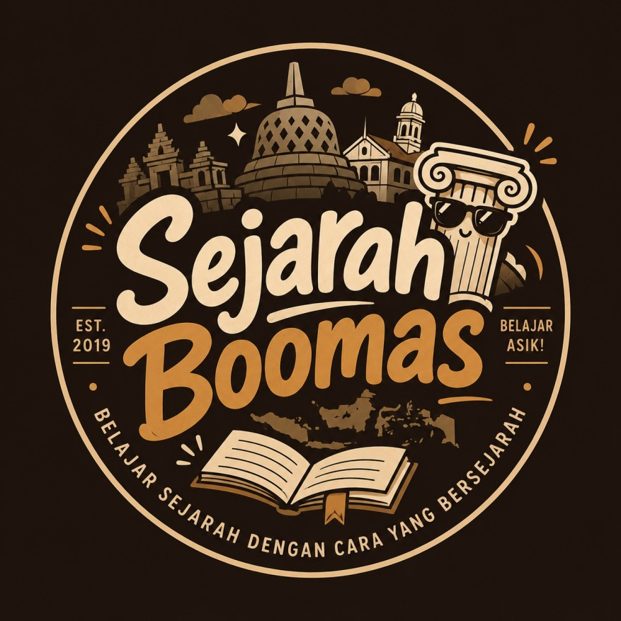
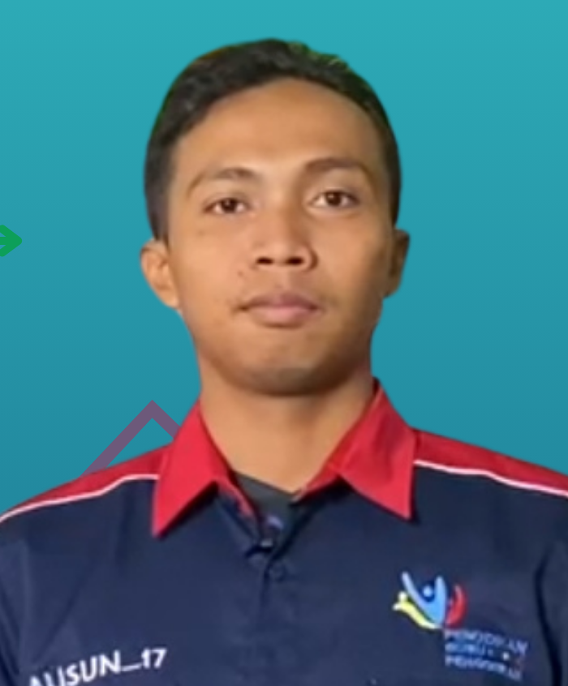

Media pembelajaran ini dirancang untuk tampilan mendatar (landscape) agar teks dan tombol tetap nyaman dibaca dan disentuh.

Krisis, Perjuangan Mahasiswa & Kelahiran Demokrasi
Isi identitasmu sebelum memulai perjalanan sejarah ini.
| Mata Pelajaran | Sejarah |
| Fase / Kelas | Fase F · Kelas XII |
| Unit | Reformasi |
| Sub Unit | Akhir Orde Baru |
| Tujuan Pembelajaran | Menganalisis faktor-faktor keruntuhan Orde Baru, dinamika gerakan mahasiswa 1998, dan proses transisi menuju era Reformasi serta dampaknya bagi kehidupan berbangsa dan bernegara. |

Sumber pustaka, aset, dan media yang digunakan dalam pembelajaran ini.